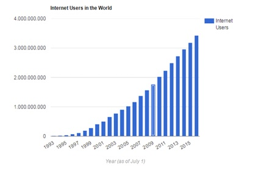
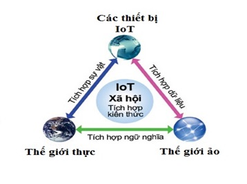
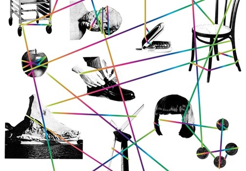
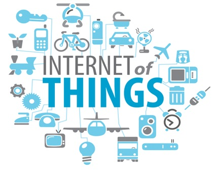
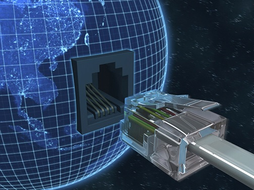

SỰ PHÁT TRIỂN CỦA MẠNG INTERNET VÀ INTERNET OF THINGS
Học kỳ I, năm học 2018-2019
I- Giới thiệu chung.
1. Thành viên nhóm.
- Chế Quang Huy
- Huỳnh Quang Huy
- Nguyễn Thế Huy
- Vũ Hoàng Hùng
- Phạm Phú Hoàng
2.Khái niệm dùng trong báo cáo.
- TCP/IP: Bộ giao thức TCP/IP, (tiếng Anh: Internet protocol suite hoặc IP suite hoặc TCP/IP protocol suite - bộ giao thức liên mạng)
- IoT: Internet of things, Internet vạn vật.
- CERN: Tổ chức Nghiên cứu Hạt nhân châu Âu (tiếng Anh: European Organisation for Nuclear Research).
- WWW: World Wide Web, không gian thông tin toàn cầu.
- SmartHome: Nhà thông minh (tiếng Anh: home automation, domotics, smart home hoặc Intellihome).
II- Nội dung trình bày.
1.INTERNET LÀ GÌ.
Internet là một hệ thống thông tin toàn cầu có thể được truy nhập công cộng gồm các mạng máy tính được liên kết với nhau. Hệ thống này truyền thông tin theo kiểu nối chuyển gói dữ liệu (packet switching) dựa trên một giao thức liên mạng đã được chuẩn hóa (giao thức IP). Hệ thống này bao gồm hàng ngàn mạng máy tính nhỏ hơn của các doanh nghiệp, của các viện nghiên cứu và các trường đại học, của người dùng cá nhân và các chính phủ trên toàn cầu.
Sự kết nối Internet
2.SỰ PHÁT TRIỂN CỦA INTERNET.
Tiền thân của mạng Internet ngày nay là mạng ARPANET. Cơ quan quản lý dự án nghiên cứu phát triển ARPA thuộc bộ quốc phòng Mỹ liên kết 4 địa điểm đầu tiên vào tháng 7 năm 1969 bao gồm: Viện nghiên cứu Stanford, Đại học California, Los Angeles, Đại học Utah và Đại học California, Santa Barbara. Đó chính là mạng liên khu vực (Wide Area Network - WAN) đầu tiên được xây dựng.
Thuật ngữ "Internet" xuất hiện lần đầu vào khoảng năm 1974. Lúc đó mạng vẫn được gọi là ARPANET. Năm 1983, giao thức TCP/IP chính thức được coi như một chuẩn đối với ngành quân sự Mỹ và tất cả các máy tính nối với ARPANET phải sử dụng chuẩn mới này.

Giao thức TCP/IP
Năm 1984, ARPANET được chia ra thành hai phần: phần thứ nhất vẫn được gọi là ARPANET, dành cho việc nghiên cứu và phát triển; phần thứ hai được gọi là MILNET, là mạng dùng cho các mục đích quân sự.
Giao thức TCP/IP ngày càng thể hiện rõ các điểm mạnh của nó, quan trọng nhất là khả năng liên kết các mạng khác với nhau một cách dễ dàng. Chính điều này cùng với các chính sách mở cửa đã cho phép các mạng dùng cho nghiên cứu và thương mại kết nối được với ARPANET, thúc đẩy việc tạo ra một siêu mạng (SuperNetwork). Năm 1980, ARPANET được đánh giá là mạng trụ cột của Internet.
Mốc lịch sử quan trọng của Internet được xác lập vào giữa thập niên 1980 khi tổ chức khoa học quốc gia Mỹ NSF thành lập mạng liên kết các trung tâm máy tính lớn với nhau gọi là NSFNET. Nhiều doanh nghiệp đã chuyển từ ARPANET sang NSFNET và do đó sau gần 20 năm hoạt động, ARPANET không còn hiệu quả đã ngừng hoạt động vào khoảng năm 1990.
Sự hình thành mạng xương sống của NSFNET và những mạng vùng khác đã tạo ra một môi trường thuận lợi cho sự phát triển của Internet. Tới năm 1995, NSFNET thu lại thành một mạng nghiên cứu còn Internet thì vẫn tiếp tục phát triển.
Với khả năng kết nối mở như vậy, Internet đã trở thành một mạng lớn nhất trên thế giới, mạng của các mạng, xuất hiện trong mọi lĩnh vực thương mại, chính trị, quân sự, nghiên cứu, giáo dục, văn hoá, xã hội... Cũng từ đó, các dịch vụ trên Internet không ngừng phát triển tạo ra cho nhân loại một thời kỳ mới: kỷ nguyên thương mại điện tử trên Internet.
(Theo bài viết của eqvn.net)
3.NHỮNG CỘT MỐC QUAN TRỌNG CỦA INTERNET.
1969 Bộ Quốc phòng Mĩ đã xây dựng dự án ARPANET để nghiên cứu lĩnh vục mạng, theo đó các máy tính được liên kết với nhau và sẽ có khả năng tự định đường truyền tin ngay sau khi một phần mạng đã được phá hủy.
1972 trong 1 cuộc hội nghị quốc tế về truyền thông máy tính, Bob Kahn đã trình diễn mạng ARPANET liên kết 40 máy thông qua các bộ xử lý giao tiếp giữa các trạm cuối Terminal Interface Processor-TIP. Cũng năm này nhóm interNET Working Group (INWG) do Vinton Cerf làm chủ tịch ra đời nhằm đáp ứng nhu cầu thiết lập giao thức bắt tay (agreed-upon). Năm 1972 cũng là năm Ray Tomlinson đã phát minh ra E-mail để gửi thông điệp trên mạng. Từ đó đến nay, E-mail là một trong những dich vụ được dùng nhiều nhất. Ethernet (một giao thức trong mạng cục bộ).
9/1973 Vinton Cerf và Bob Kahn đề xuất những cơ bản của Internet. Đó chính là những nét chính của giao thức TCP/IP
1974 BBN đã xây dựng giao thức ứng dụng Telnet cho phép sử dụng máy tính từ xa.
1976 phòng thí nghiệm của hãng AT&T phát minh ra dịch vụ truyền tệp cho mạng FTP
1978 Tom Truscott và Steve Bellovin thiết lập mạng USENET dành cho những người sử dụng UNIX. Mạng USENET là một trong những mạng phát triển sớm nhất và thu hút nhiều người nhất.
1979 ARPA thành lập ban kiểm soát cấu hình Internet.
1981 ra đời mạng CSNET (Computer Science NETwork) cung cấp các dịch vụ mạng cho các nhà khoa học ở trường đại học mà không cần truy cập vào mạng ARPANET.
1982 các giao thức TCP và IP được DAC và ARPA dùng đối với mạng ARPANET. Sau đó TCP/IP được chọn là giao thức chuẩn.
1983 ARPANET được tách ra thành ARPANET và MILNET. MILNET tích hợp với mạng dữ liệu quốc phòng, ARPANET trở thành 1 mạng dân sự. Hội đồng các hoạt động Internet ra đời, sau này được đổi tên thành Hội đồng kiến trúc Internet.
1991 Web Father, Tim Berners-Lee phát minh World Wide Web (www).
1995 Amazon được thành lập bởi Jeff Bezos. Cho đến nay, Amazon vẫn được đánh giá là một trong những công ty thương mại điện tử thành công và có quy mô lớn. Trong thời gian này, nhiều công ty bắt đầu nghiên cứu côn nghệ tìm kếm được thành lập như Alta Vista, Infoseek, Excite ….
1996 Yahoo! Được đưa lên sàn chứng khoán. Yahoo nổi tiếng với dịch vụ tìm kiếm, danh bạ, nội dung số, dịch vụ email và tin nhắn nhanh (Instant Messenger)
1997 MP3.com được thành lập. Chuẩn MP3 đã làm cho các tập tin âm nhạc và âm thanh dễ dàng được truyền đi trong môi trường internet. Mở đường cho công nghệ giải trí trên internet. Trong thời gian này, thuật ngữ “search engine optimization”(Tối ưu hóa cho công cụ tìm kiếm) được sử dụng đầu tiên trên một diễn đàn
1998 Google được thành lập bởi Larry Page và Sergey Brin. Mặc dù công nghệ tìm kiếm trên internet đã được nhiều công ty nghiên cứu phát triển trước đó, nhưng sản phẩm tìm kiếm của Google mới chính là điều mà người dùng internet thực sự mong đợi. Cho đến ngày nay, công cụ tìm kiếm của Google vẫn là công cụ tìm kiếm được nhiều người sử dụng nhất. Sự ra đời của Google đã giúp cho người dùng internet khai thác thông tin tiện lợi hơn, và giúp cho các website có nhiều cơ hội hơn để tiếp cận với người dùng internet.
1999 Peter Merholz đưa ra khái niệm “blog”. Một cách đọc tắc của cụm từ Web log. Từ đây việc làm ra một website đã dễ dàng hơn, và người dùng có thể sử dụng internet làm nơi viết nhật ký. Về sau Blog không còn đơn giản là những nhật ký riêng trên internet mà còn là nơi chia sẻ kiến thức, kinh nghiệm, quan điểm cá nhân… và trở thành một công cụ quan trọng của truyền thông xã hội.
2000 Google AdWords, dịch vụ quảng cáo trên Google ra đời. Quảng cáo trên Google Adwords lú đó tính tiền theo CPM (số lượt xuất hiện của quảng cáo).
2002 Google AdWords thay đổi cách tính tiền thành PPC (Pay per click). Về sau, đây là một trong những hình thức quảng cáo được nhiều người làm marketing yêu chuộng nhất
2003 eBay topples Amazon as the most visited UK web site.
2006 Google mua lại YouTube với giá 1.6 tỷ USD. Mở ra một thời kỳ mới về xem phim và chia sẻ phim ảnh qua mạng internet.
2006 Facebook chính thức mở cửa cho người dùng đăng ký. Khái niệm mạng xã hội trở nên quen thuộc hơn với người dùng internet. Truyền thông xã hội bắt đầu phát triển mạnh mẻ. Vai trò của người dùng internet trong truyền thông được đánh giá cao. Quyền lực của người dùng internt cũng tăng lên Time Magazine đã bầu chọn “You” (người dùng internet) là nhân vật của năm vì những hoạt động online của người dùng internet.
2007 Iphone ra đời, mở ra một chương mới của điện thoại thông minh, từ đây sự gắn kết của truyền thông di động và internet càng chặt chẽ hơn.
2008 Thế giới có 1.4 tỷ người dùng internet
2011 Thế giới có hơn 2 tỷ người sử dụng internet...

Sự gia tăng người dùng qua các năm
4.WORLD WIDE WEB.
Năm 1991, Tim Berners Lee ở Trung tâm nghiên cứu nguyên tử châu Âu (CERN) phát minh ra World Wide Web (WWW) dựa theo một ý tưởng về siêu văn bản được Ted Nelson đưa ra từ năm 1985. Có thể nói đây là một cuộc cách mạng trên Internet vì người ta có thể truy cập, trao đổi thông tin một cách dễ dàng.
Năm 1994 là năm kỉ niệm lần thứ 25 ra đời ARPANET, NIST đề nghị thống nhất dùng giao thức TCP/IP. WWW đã trở thành dịch vụ phổ biến thứ 2 sau dịch vụ FTP. Những hình ảnh video đầu tiên được truyền đi trên mạng Internet.
World Wide Web, gọi tắt là Web hoặc WWW, mạng lưới toàn cầu là một không gian thông tin toàn cầu mà mọi người có thể truy nhập (đọc và viết) qua các máy tính nối với mạng Internet. Thuật ngữ này thường được hiểu nhầm là từ đồng nghĩa với chính thuật ngữ Internet. Nhưng Web thực ra chỉ là một trong các dịch vụ chạy trên Internet, chẳng hạn như dịch vụ thư điện tử.
Các tài liệu trên World Wide Web được lưu trữ trong một hệ thống siêu văn bản (hypertext), đặt tại các máy tính trong mạng Internet. Người dùng phải sử dụng một chương trình được gọi là trình duyệt web (web browser) để xem siêu văn bản. Chương trình này sẽ nhận thông tin (documents) tại ô địa chỉ (address) do người sử dụng yêu cầu (thông tin trong ô địa chỉ được gọi là tên miền (domain name)), rồi sau đó chương trình sẽ tự động gửi thông tin đến máy chủ (web server) và hiển thị trên màn hình máy tính của người xem. Người dùng có thể theo các liên kết siêu văn bản (hyperlink) trên mỗi trang web để nối với các tài liệu khác hoặc gửi thông tin phản hồi theo máy chủ trong một quá trình tương tác. Hoạt động truy tìm theo các siêu liên kết thường được gọi là duyệt Web.
Quá trình này cho phép người dùng có thể lướt các trang web để lấy thông tin. Tuy nhiên độ chính xác và chứng thực của thông tin không được đảm bảo.”
(Theo Wikipedia, tháng 11/2011)
5. MỘT TRONG NHỮNG XU HƯỚNG PHÁT TRIỂN CỦA INTERNET TRONG TƯƠNG LAI.
INTERNET OF THINGS

Internet of Things là gì?
Thực chất, biểu hiện của Internet of Things (IoT) đã xuất hiện ngay từ thời kỳ sơ khai của Internet, khi các nhà phát minh mong muốn kết nối tất cả mọi thứ qua một mạng lưới đồng nhất để có thể điều khiển chúng phục vụ cho mục đích của con người.
Trong các tư liệu về IoT, người ta thường nhắc đến một chiếc máy bán nước giải khát tự động tại trường Đại học Carnegie Melon (Mỹ) vào đầu những năm 1980 như là một thiết bị đầu tiên mở màn cho xu hướng này, chiếc máy được lập trình để có thể kết nối với người điều khiển qua Internet, nhằm kiểm tra tình trạng của máy và bổ sung nước khi cần thiết mà không cần sự tiếp xúc kiểm tra trực tiếp.

Sau đó, khái niệm Internet of Things chỉ thực sự được đưa ra vào năm 1999, khi mà người ta bắt đầu nhận thấy tiềm năng của xu hướng này, bên cạnh việc mạng Internet cũng như nhiều rào cản về mặt khoa học công nghệ đã dần được khai phá.

Theo định nghĩa từ Wikipedia:
Internet of Things (IoT) là một kịch bản của thế giới, khi mà mỗi đồ vật, mỗi đồ vật, con người được cung cấp một định danh của riêng mình, và tất cả có khả năng truyền tải, trao đổi thông tin, dữ liệu qua một mạng duy nhất mà không cần đến sự tương tác trực tiếp giữa người với người, hay người với máy tính. IoT đã phát triển từ sự hội tụ của công nghệ không dây, công nghệ vi cơ điện tử và Internet.
Như vậy có thể tạm hiểu, Internet of Things là khi tất cả mọi thứ đều được kết nối với nhau qua mạng Internet, người dùng (chủ) có thể kiểm soát mọi đồ vật của mình qua mạng mà chỉ bằng một thiết bị thông minh, chẳng hạn như smartphone, tablet, PC hay thậm chí chỉ bằng một chiếc smartwatch nhỏ bé trên tay.
Gần đây, Internet of Things còn bao gồm cả những giao tiếp theo kiểu máy với máy (M2M), hạn chế sự tác động của con người nhưng chủ yếu được áp dụng trong sản xuất năng lượng hay các ngành công nghiệp nặng.
Viễn cảnh tưởng chừng chỉ có trên phim ảnh này đã dần hiển hiện trên thực tế, với sự phát triển của Nhà thông minh, TV thông minh, tủ lạnh thông minh,…. và cũng không thể không kể tới sự mở rộng không gian địa chỉ lên IPv6 thay vì IPv4 như trước đây.
Internet of Things là tương lai của thế giới
Mặc dù đã manh nha từ lâu nhưng kỷ nguyên Internet of Things chỉ thực sự được sự được chú ý và bùng nổ trong những năm gần đây, sau sự phát triển của smartphone, tablet và những kết nối không dây,…

Và ngay sau khi nhận được sự chú ý của cộng đồng, IoT đã cho thấy tiềm năng của mình với những số liệu đáng kinh ngạc.
Cisco, nhà cung cấp giải pháp và thiết bị mạng hàng đầu hiện nay dự báo: Đến năm 2020, sẽ có khoảng 50 tỷ đồ vật kết nối vào Internet, bao gồm hàng tỷ thiết bị di động, tivi, máy giặt, …
Để thấy được sự phát triển của lĩnh vực này, họ cũng đưa ra số liệu vào năm 1984, khi mà Cisco mới thành lập mới chỉ có khoảng 1.000 thiết bị được kết nối mạng toàn cầu, đến năm 2010, con số này đã lên mức 10 tỷ.
Intel, đơn vị mới tham gia vào thị trường sản xuất chip cho các thiết bị thông minh phục vụ IoT cũng đã thu về hơn 2 tỷ USD trong năm 2014 từ lĩnh vực này, tăng trưởng 19% so với năm 2013.
Và không thể không kể tới một thương hiệu Việt Nam là Bkav cũng đã đạt được những thành tựu đáng ghi nhận về Internet of Things. Hệ thống nhà thông minh SmartHome của Bkav là một tổ hợp các thiết bị thông minh trong 1 ngôi nhà, đều được kết nối Internet và có thể tự động điều chỉnh cũng như điều khiển qua smartphone.
Bên cạnh đó, các ông lớn như Google, Apple, Samsung, Microsoft cũng không hề giấu diếm ý định xâm nhập thị trường này, hứa hẹn một cuộc cạnh tranh mạnh mẽ trong thời gian tới đây, đưa kỷ nguyên IoT đến sớm hơn với mọi người.
Rõ ràng, Internet of Things có thể thay đổi hoàn toàn cách sống của con người trong tương lai. Khi mọi thứ đã được “Internet hóa”, người dùng hoàn toàn có thể điều khiển chúng từ bất cứ đâu, chỉ cần một chiếc điện thoại có kết nối Internet. Sở hữu những thành tựu trong lĩnh vực này nghĩa là bạn đang nắm giữ trong tay chìa khóa thành công của mọi thời đại. Internet of Things chính là xu hướng của tương lai.
6.QUAN ĐIỂM CỦA NHÓM VỀ INTERNET OF THINGS.
*Về mặt lợi:
Về cơ bản việt kết nối internet với tất cả các thiết bị để biến nó trở thành thiết bị thông minh là một điều tất yếu. Vì những tiện ích mà nó đem lại cho chúng ta trên nhiều lĩnh vực. Cụ thể là :
- Tự động hóa/điều khiển sự sản xuất:
Nhờ các cảm biến có khả năng kết nối Internet, việc tự động hóa các quá trình đạt đến một mức cao hơn về tính hiệu quả và độ chính xác. Các thiết bị logger dữ liệu và các hệ thống thu thập dữ liệu ngày nay có thể cung cấp dữ liệu và lệnh đến các hệ thống thiết bị PLC (Programmable Logic Controller – thiết bị điều khiển lập trình được) và SCADA (Supervisory Control And Data Acquisition – hệ thống điều khiển giám sát và thu thập dữ liệu) trong từng khâu của quá trình để nâng cao hiệu quả và chất lượng sản phẩm với giá thấp nhất.
Ví dụ: người dùng có thể cài đặt tự động một chương trình hệ thống DAQ (Data Acquisition – thu thập dữ liệu) để tự động điều khiển nhiệt độ quá trình (cho một bồn chứa nước, buồng sấy, máy móc …), để tối ưu dây chuyền sản xuất, hoặc để tăng độ chính xác về lượng hóa chất trong một khoảng thời gian lý tưởng.
- Những lĩnh vực thuộc nông nghiệp/môi trường:
Các trạm khí tượng có thể truyền tải các dữ liệu về môi trường theo thời gian thực cho những người nông dân, các công ty nông nghiệp và các tổ chức nghiên cứu có cái nhìn chính xác nhất về vi khí hậu nghiên cứu. Thông số về độ ẩm của đất là nhân tố đặc biệt quan trọng trong các ứng dụng về nông nghiệp, và hiện nay các cảm biến không dây giúp ích rất nhiều cho việc thu thập dữ liệu thời gian thực thông qua nhiều điểm giám sát và gửi các dữ liệu này đến một cổng kết nối không dây. Tương tự, chủ các nhà kính đang áp dụng công nghệ không dây này để tìm kiếm các vùng bị che phủ thiếu ánh sáng trong hệ thống điều khiển vi thời tiết của họ và loại bỏ các mẫu vật bị ẩm mốc trước khi lây lan. Tương tự, các ứng dụng về chăn nuôi và nghiên cứu động vật cũng phát triển với sự nâng cao của các ứng dụng di động cho phép người nông dân và người nuôi giữ thú kiểm tra nhanh chóng sức khỏe của gia súc và các con thú.
Ví dụ: Các thiết bị lấy thông tin từ đài khí tượng về nhiệt độ, độ ẩm, tính toán xem có mưa không để bón phân, tưới nước hợp lý.
- Lĩnh vực ô tô & không gian:
Các ứng dụng trong lĩnh vực ô tô dựa rất nhiều vào khả năng giám sát của các cảm biến cả trong khâu sản xuất và thử nghiệm, ví dụ sử dụng CANBus (Controller Area Network – mạng khu vực điều khiển), một giao thức trao đổi thông tin được sử dụng rộng rãi trong các phép chẩn đoán on-board. Trong một mô hình nhất định, bộ truyền lực có mạng kết nối của riêng nó, tay lái, động cơ cũng vậy… Trong một ứng dụng giám sát lượng khí thải điển hình, một thiết bị thu thập dữ liệu ghi lại nhiệt độ dầu máy thông qua các cảm biến cặp nhiệt điện và gửi dữ liệu đến một máy tính trung tâm để phân tích dữ liệu.
Các ứng dụng không gian ngày nay đều phụ thuộc vào các cảm biến, thường sử dụng các hệ thống thu thập dữ liệu mạnh mẽ giám sát nhiều thông số khác nhau. Từ việc ghi lại áp suất trong máy bay quân sự, giám sát rung động trong turbo tăng áp và turbo động cơ máy bay, và nhiều hơn nữa.
Các ứng dụng cảm biến kết nối mạng cung cấp ví dụ tuyệt vời về Internet of Things đang mở rộng việc sản xuất công nghiệp để tự động hóa việc thu thập dữ liệu và giảm chi phí hoạt động.
Ví dụ: Liên kết hệ thống xe, lấy thông tin từ Internet để phân tích, vẽ đường cho các phương tiện di chuyển sao cho không có tình trạng tắc đường.
- Các ứng dụng di động cho khả năng truy cập dữ liệu từ xa:
Với sự hiện diện gần như phổ quát của điện thoại thông minh trong thị trường tiêu dùng và công nghiệp, hiện nay nhiều datalogger có các ứng dụng di động cho phép người dùng xem và tải về các dữ liệu được thu thập từ các cảm biến từ xa, cho biết nhiệt độ máy hoặc sản phẩm trong một nhà máy xử lý. Cho dù dòng điện/điện thế, thời gian hoạt động, nhiệt độ/độ ẩm hoặc bất kỳ giá trị nào của nó, người sử dụng đang tìm cách làm cho rẻ hơn và dễ dàng hơn giữ các tab trên dữ liệu của họ cho dù trong hoặc ngoài giờ làm việc. DT-Remote cung cấp bởi Pacific Data Systems, được phát triển cho các thiết bị thu dữ liệu dataTaker, là một ứng dụng phổ biến cho phép cấu hình và xem dữ liệu thời gian thực sử dụng màn hình bảng điều khiển mặt đồng hồ và đồ thị.
Ví dụ: Sự liên kết của camera và smart phone có thể truy xuất dữ liệu của nhau từ xa thông qua Internet
- Lĩnh vực nhà ở
Nhà thông minh (tiếng Anh: home automation, domotics, smart home hoặc Intellihome) là kiểu nhà được lắp đặt các thiết bị điện, điện tử có thể được điều khiển hoặc tự động hoá hoặc bán tự động, thay thế con người trong thực hiện một hoặc một số thao tác quản lý, điều khiển. Hệ thống điện tử này giao tiếp với người dùng thông qua bảng điện tử đặt trong nhà, ứng dụng trên điện thoại di động, máy tính bảng hoặc một giao diện web.
Trong căn nhà thông minh, đồ dùng trong nhà từ phòng ngủ, phòng khách đến toilet đều gắn các bộ điều khiển điện tử có thể kết nối với Internet và điện thoại di động, cho phép chủ nhân điều khiển vật dụng từ xa hoặc lập trình cho thiết bị ở nhà hoạt động theo lịch. Thêm vào đó, các đồ gia dụng có thể hiểu được ngôn ngữ của nhau và có khả năng tương tác với nhau.
Có nhiều thương hiệu cho nhà thông minh, tuy vậy chưa có chuẩn công nghiệp nào được đặt ra cho nó và do vậy thị trường nhà phân minh rất phân mảnh.[3] Các gói nhà thông minh hiện nay sử dụng các giao thức riêng cho từng công ty và không tương thích với nhau. Các công ty cung cấp nhà thông minh hạn chế việc cài đặt độc lập của cá nhân bằng cách không cung cấp tài liệu chi tiết về sản phẩm và kiện các cá nhân ra tòa.
Ví dụ: một căn nhà thông minh, trong đó các đồ điện gia dụng có thể tự chúng tương tác với nhau và hoạt động mà không cần phải vào Internet, trừ khi chúng ta cần điều khiển nó từ xa. Ngôi nhà này có thể được xem là một subsystem. Cũng giống như hiện nay chúng ta có các mạng LAN, WAN, mạng ngang hàng nội bộ chứ không kết nối trực tiếp vào Internet.
*Về mặt hại:
- Sự an toàn giảm
- Làm con người quá phụ thuộc về công nghệ
- Ảnh hưởng tới sức khỏe của con người
- Giảm sự tương tác giữa người với người
- Giảm sự tương tác giữa người với người
- Ảnh hưởng tư duy
*Dự kiến:
Các chuyên gia dự báo rằng Internet Of Things sẽ ôm trọn chừng 30 tỉ vật trước năm 2020.